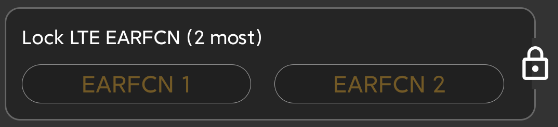
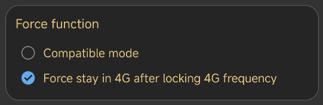

Frequently Asked
Questions (FAQ)
1. Equipment requirements
1.1 The system is at least
Android 6.0 or higher.
1.2 Frequency lock,
network lock, signaling and more physical layer parameters require Qualcom
chipset and ROOT or Hisilicon chipset with HiAgent service
installed.
1.3 Other chips can use
the test function without affecting the configuration test plan and task
execution function. The file format can be CSV.
1.4 Early mobile phones
such as S7, MI6 and other devices that do not support dual 4G, sometimes there
is a phenomenon that the lock frequency band falls back to 2G,
but the frequency
lock point is normal.
1.5 If the frequency band
exists, it will fall back to 2G after being locked. At this time, you can
re-check the "4G" button to lock the network to force it to enter 4G
mode.
2. Which network
locks are supported
-
GSM lock frequency band.
-
WCDMA lock frequency band and uarfcn.
-
LTE lock frequency band, PCI, Eafcn.
-
NR lock frequency band, PCI, Arfcn.
You
can see the list of supported devices on the "Devices" page, and select the lock
on the right after checking.

4. What to do if the list shows that it is loading
Confirm whether
it is a Qualcomm chipset, and it has been ROOT and authorized. If all are
satisfied, it may be that the new phone needs to be adapted.
5. What to do if I don't know which frequency bands to lock
Firstly find the list of
supported LTE frequency bands on the device page, and then try them separately.
If the list is empty, you can determine which frequency bands Google's current
operator supports. Then check the frequency band list. Don't select more than
one at a time, you need to try one by one. After successfully locking the
network frequency band, you can see the corresponding arfcn in the LTE page,
Remember that if you find that the arfcn is good in the later stage of these
Arfcn , you can directly enter the arfcn number at the frequency, such as 375.
Up to 2 arfcns can be input at a time.

6. Ordinary membership rights
Ordinary member can smoothly use the frequency band lock ,PCI lock,Arfcn and
network lock functions.
7.
Premium membership rights
Premium member can use all the functions of the software without
restrictions
-
Test script configuration and executing.
-
Log recording no time limit
-
Memory playback (signaling, event, parameter synchronization).
-
File playback.
-
Import of cell parameters and base station connection, query.
-
Batch signaling export (support csv, pcap).
-
View and export a single signal.
-
Signaling and event dual card separation.
-
Map tracking export (support csv, kml).
-
Indoor map dotting supported(export kmz and csv)
8.
What to do if the frequency lock function not work
Some mobile phones cannot be used normally due to driver or permission issues,
you can try the following methods in the settings
-
Select compatible mode.

9.
What to do if the outdoor map track is not continuous
Because
of Google limit background access GPS, please keep app runs in
foreground.
10.
What to do if the outdoor map track is not continuous
Because
of Google limit background access GPS, please keep app runs in
foreground.
11.
How to select file format
you
can select DLF,CU,L5G format If you have post processing tools. and
these file formats contains raw chipset data.
We
recommend using Noe products which fully compatible with all formats. see
the website.
and
CSV file is a text format you can select Microsoft XLS to process.
if you device works in general mode,csv file is only choice.
The
root path:
1. /CellularPro (Android 10 and below).
2.
/Android/data/make.more.r2d2.celluar_pro/files/CellularPro
- CellularPro
- logs --> including dlf/csv/xls/cu/l5g files
- export
- cache --> auto cache csv files
- indoor --> csv and kmz files
- outdoor --> csv and kml files
- signaling --> csv and pcap files